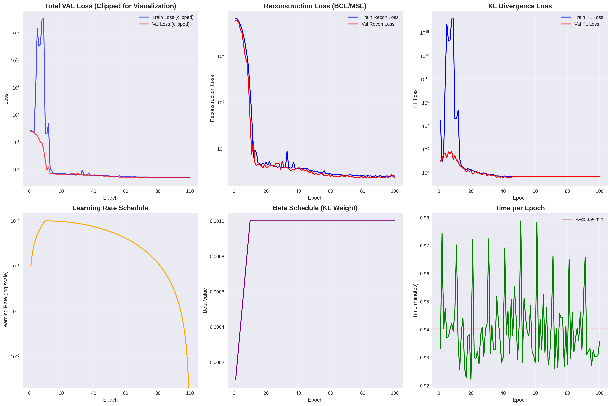
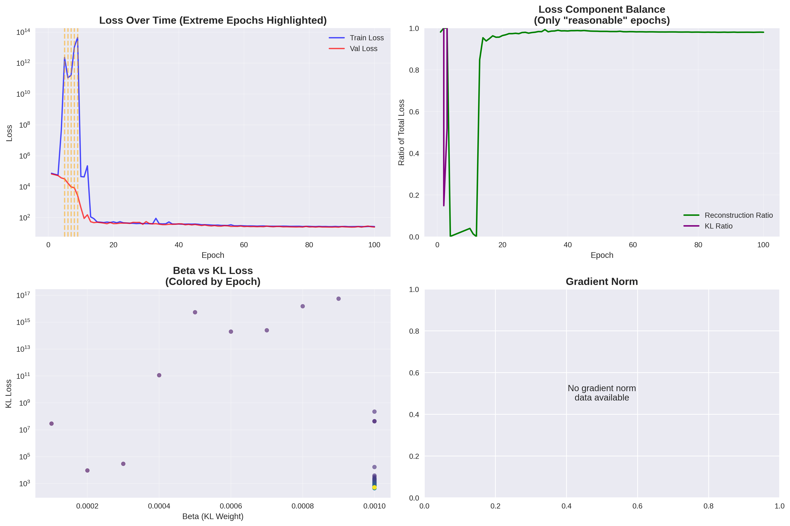

🤖 VAE Training Analysis Report
Overall Status: 🚨 TRAINING ISSUES DETECTED
📈 Key Metrics
Total Epochs: 100
Max Training Loss: 4.51e+13
Max KL Loss: 5.57e+16
Final Training Loss: 26.3850
Final Validation Loss: 24.4051
📊 Visualizations
Robust Loss Analysis

Training Stability

💡 Recommendations
Consider restarting training with lower learning rate and slower beta warmup.
Monitor KL loss - consider beta annealing strategy.
Generated on 2025-08-17 07:20:50